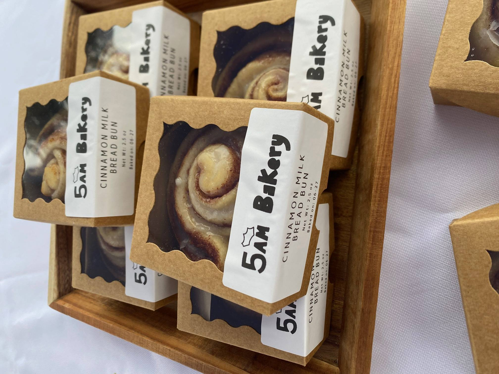

5am Bakery was a small farmers market stand at Urbana's Market at the Square in the spring of 2026.
For me, it was my own venture that provided me with an outlet for my obsessive, detail-oriented nature.
A whimsical daydream brought to life, simply because why not?
While I no longer operate it, I don't consider it dead. It's dormant.
It could reawaken, possibly stronger than ever, possibly in a completely different form.
But it's definitely not dead.
